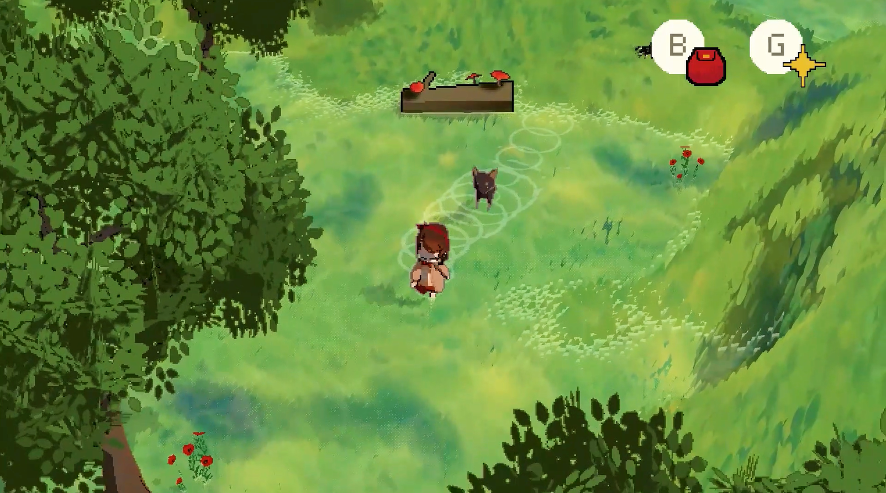
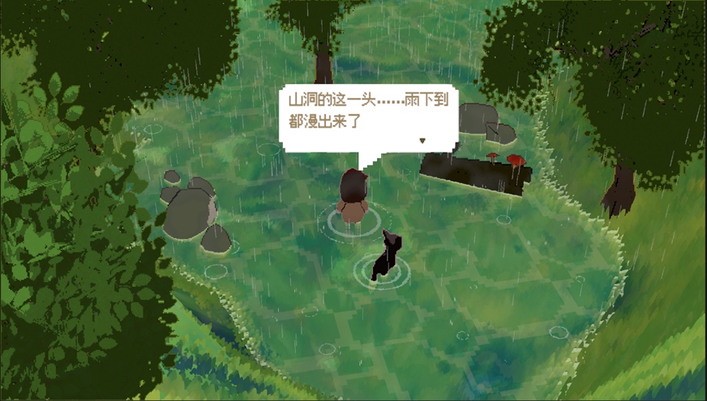
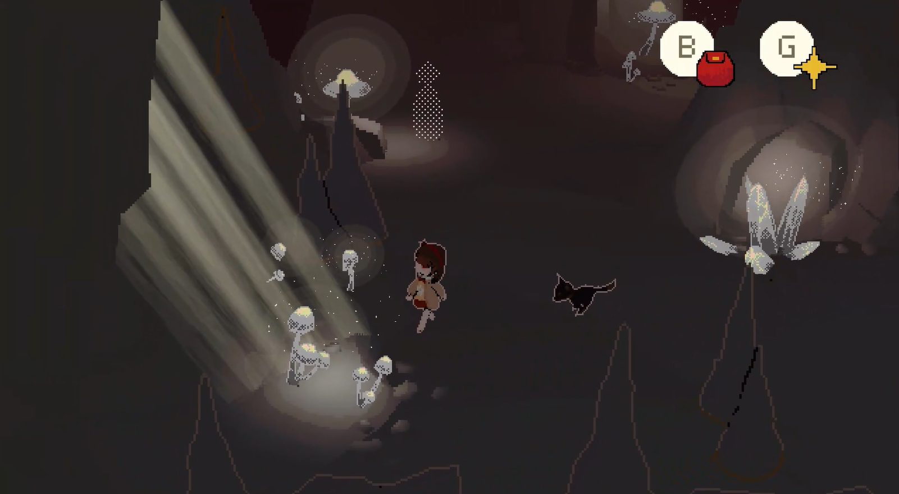
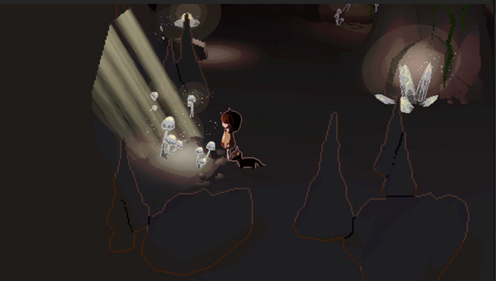
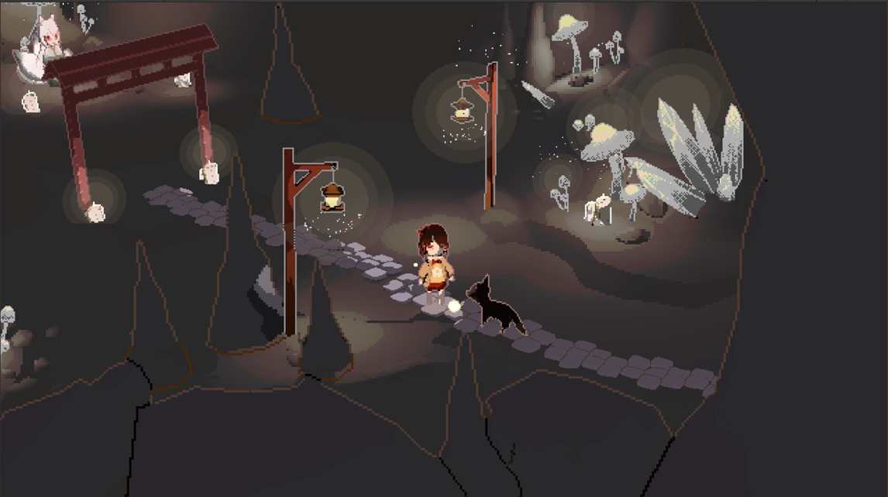
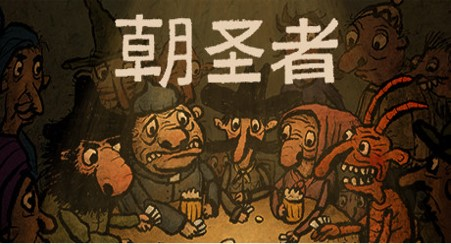
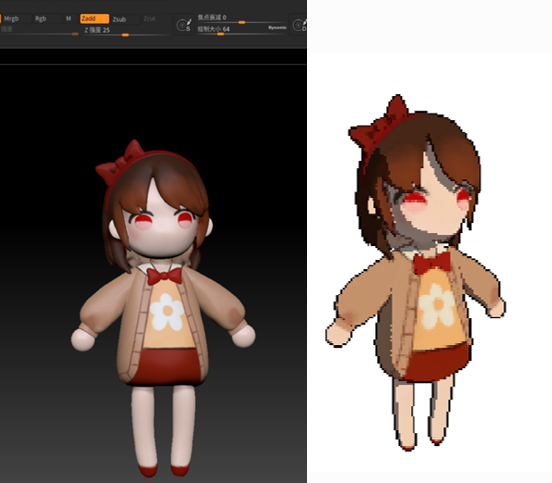
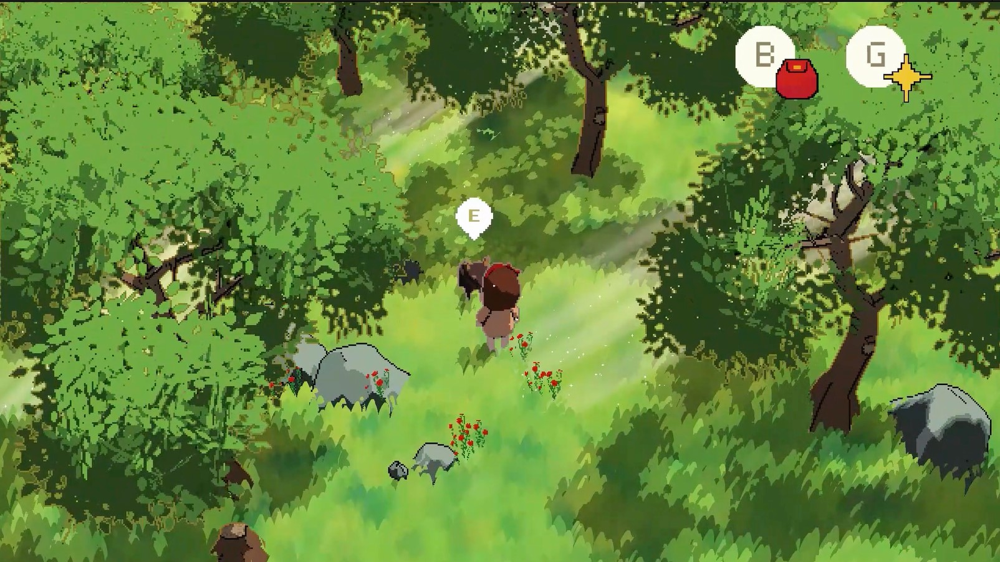

在毕业了~我们的毕设环节可以选择写毕业论文复现算法或者是个人手搓一个游戏，果断选手搓游戏。就这样独立完成了人生中第一个属于我自己的游戏（不考虑独立做完的游戏，算上参与的话，是人生中第三个）
来复盘一下，顺便展示一些使用的技术点。
画面展示





游戏玩法
游戏内容是千与千寻式的一个误入森林的小女孩和森林里生活的各式精怪鬼魂交流，完成任务，并找到回家的路的过程。
玩法层面参与了前两年出的一个我很感兴趣的独立游戏《朝圣者》。简而言之就是玩家可以在游戏中获得十数种道具，通过道具和npc交互可以推进剧情发展。但是一个npc会对不止一种道具起反应，意思是，玩家可以发挥自己的脑洞，思考这个道具可以在哪些地方发挥出作用，不同的使用方式会导向不同的剧情发展，但是大部分时候只要使用得当，玩家都能找到回家的路。总共有六条可以通关的线路。

一些渲染技术方案点
3D像素化风格
这个游戏最鲜明的风格点就是像素化的风格。我使用的是一种通过屏幕位置坐标和dither来将3D模型像素化的方案。
通俗来讲，通过物体在屏幕中的位置，计算他们像素化的大小，以及对于边缘进行点阵或者方格状的alpha clip，对于内部的basecolor或者光照效果，利用dither来对uv进行偏移，最后用上color grading来混合做到了像素化的效果。

人物模型都是我自己在Zbrush里手搓的，很丑哈。
God ray
圣光。用来模拟林间光束落下时候的丁达尔效应。用粒子系统再做点漂浮的尘点效果是绝杀。

没啥好说的就是用billboard效果做的，让光束面片始终正对着镜头。
水面涟漪

主角在水面上行走过后会留下涟漪印记。
根据一张RVT记录人物轨迹，实时计算涟漪的范围。